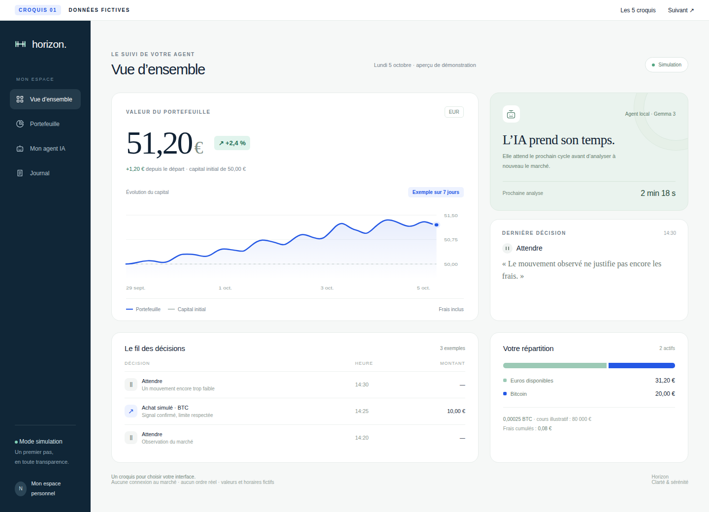
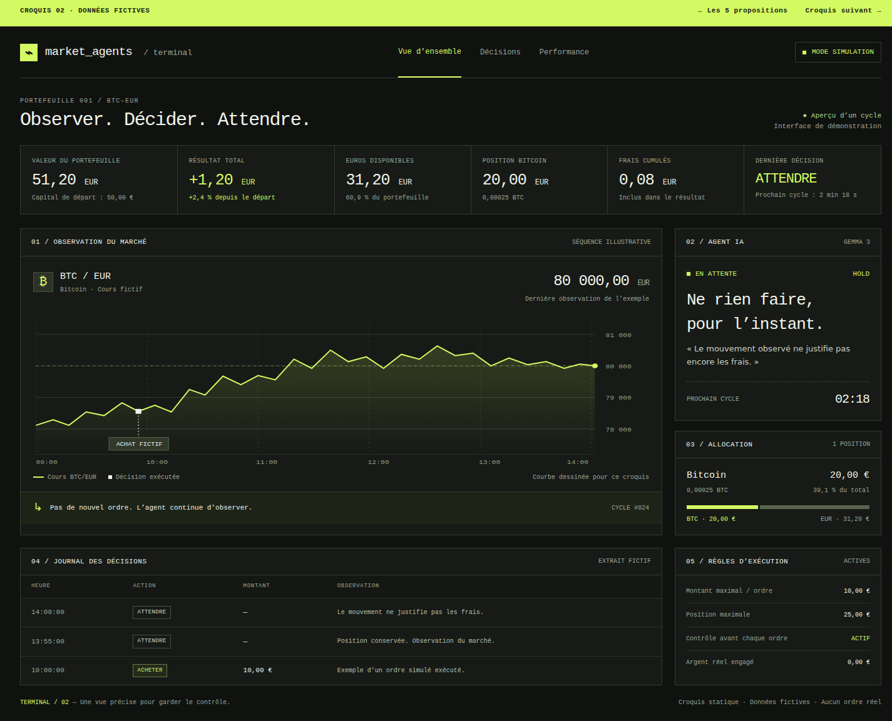
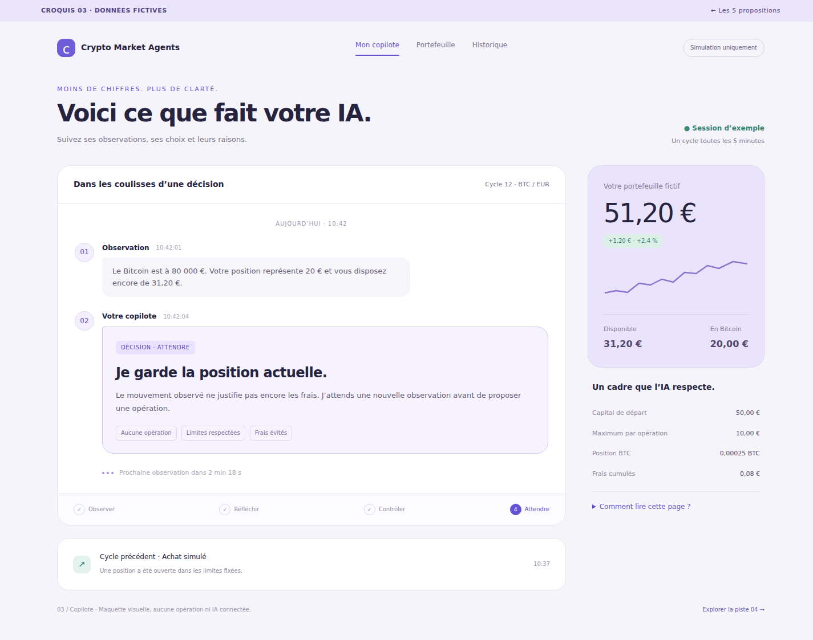
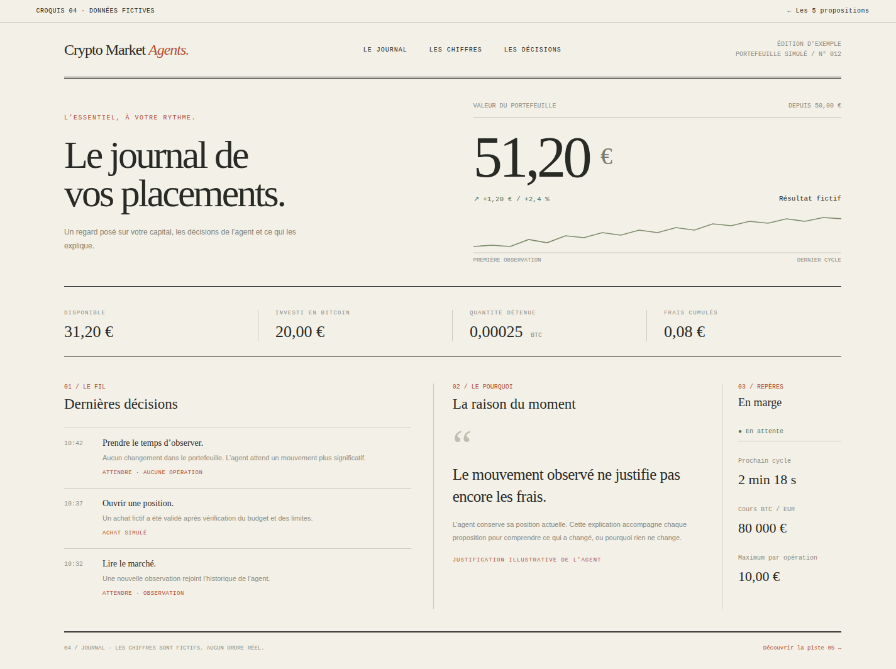
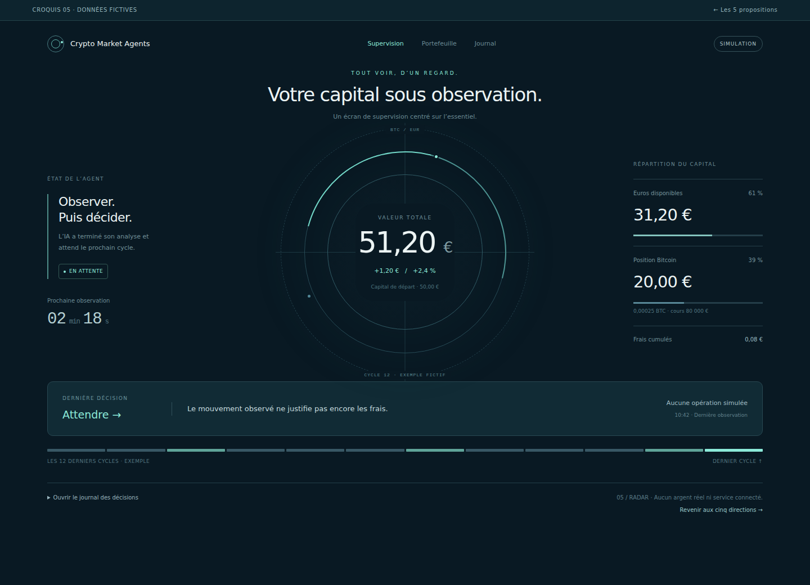

À vous de choisir la direction.
Une même IA.
Cinq façons de la suivre.
Des compositions, des ambiances et des priorités différentes. Les chiffres sont identiques et entièrement fictifs pour comparer uniquement les interfaces.

Ouvrir en grand ↗Horizon
↗Une vue claire du portefeuille, avec des chiffres lisibles et un graphique au premier plan.

Ouvrir en grand ↗Terminal
↗Un poste de surveillance dense, pensé pour lire le marché et le journal sans détour.

Ouvrir en grand ↗Copilote
↗Les décisions se lisent comme une conversation. La raison de chaque choix devient centrale.

Ouvrir en grand ↗Journal
↗Une lecture posée, inspirée de la presse : grands caractères, papier crème et fil chronologique.

Ouvrir en grand ↗Radar
↗Le capital au centre d’un écran circulaire, pour repérer l’état de l’agent d’un seul regard.
Laquelle vous ressemble ?
Choisir un style.
Ou combiner deux idées.
Indiquez le numéro qui vous plaît dans la conversation. Vous pouvez aussi préciser : « le style du 4 avec les explications du 3 ».